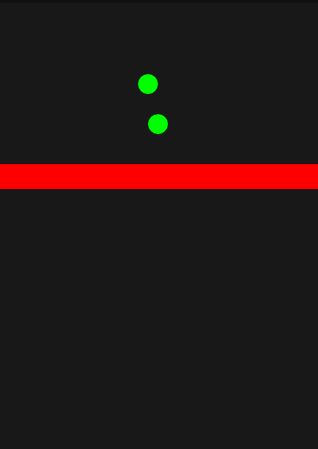
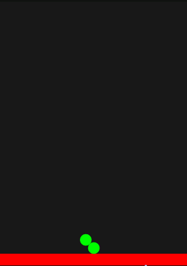
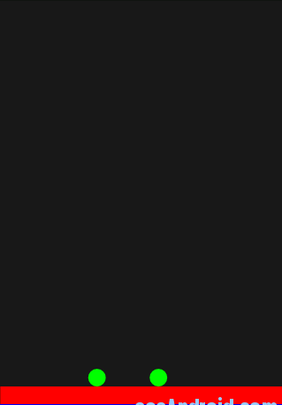

Android 2D引擎实例
Box2d是一个很出名的2d物理引擎，大家可以google之。Box2d有C++，flash和Java等版本。android可以直接使用java版本的Jbox2d，但因为Jbox2d的图形渲染是使用processing库来实现的，所以，在android中使用Jbox2d的时候，图形渲染的工作就只能自己来写了。因为网上关于box2d的资料真的非常的少，特别是关于图形绘制方面，所以，虽然程序写得不是很好，还是贴上来了，效果图：



程序很简单：蓝色的是地面，从上面掉下两个绿球和一个红色的方块，它们之间的碰撞都由box2d引擎自己来完成。
代码如下：
import org.jbox2d.collision.AABB;import org.jbox2d.collision.CircleDef;
import org.jbox2d.collision.PolygonDef;
import org.jbox2d.common.Vec2;
import org.jbox2d.dynamics.Body;
import org.jbox2d.dynamics.BodyDef;
import org.jbox2d.dynamics.World;
import android.app.Activity;
import android.content.Context;
import android.graphics.Canvas;
import android.graphics.Color;
import android.graphics.Paint;
import android.os.Bundle;
import android.os.Handler;
import android.view.View;
import android.view.Window;
import android.view.WindowManager;
public class MyBox2d extends Activity {
private final static int RATE = 10;// 屏幕到现实世界的比例 10px：1m;
private AABB worldAABB;// 创建 一个管理碰撞的世界
private World world;
private float timeStep = 1 / 60;// 模拟的的频率
private int iterations = 10;// 迭代越大，模拟约精确，但性能越低
private Body body, body2, body3;
private MyView myView;
private Handler mHandler;
public void onCreate(Bundle savedInstanceState) {
super.onCreate(savedInstanceState);
requestWindowFeature(Window.FEATURE_NO_TITLE);
getWindow().setFlags(WindowManager.LayoutParams. FLAG_FULLSCREEN ,WindowManager.LayoutParams. FLAG_FULLSCREEN);
worldAABB = new AABB();
//上下界，以屏幕的左上方为 原点，如果创建的刚体到达屏幕的边缘的话，会停止模拟
worldAABB.lowerBound.set(-100.0f,-100.0f);
worldAABB.upperBound.set(100.0f, 100.0f);//注意这里使用的是现实世界的单位
Vec2 gravity = new Vec2(0.0f,10.0f);
boolean doSleep = true;
world = new World(worldAABB, gravity, doSleep);//创建世界
createBox(160, 470, 160, 10, true);
createBox1(160, 150, 160, 10, false);
createCircle(160, 100, 10);
createCircle1(150, 60, 10);
timeStep = 1.0f/60.0f;
iterations = 10;
myView = new MyView(this);
setContentView(myView);
mHandler = new Handler();
mHandler.post(update);
}
private Runnable update = new Runnable() {
public void run() {
world.step(timeStep, iterations);// 开始模拟
Vec2 position = body.getPosition();
Vec2 position1 = body2.getPosition();
Vec2 position2 = body3.getPosition();
myView.x = position.x * RATE;
myView.y = position.y * RATE;
myView.x1 = position1.x * RATE;
myView.y1 = position1.y * RATE;
myView.x2 = position2.x * RATE;
myView.y2 = position2.y * RATE;
myView.update();
mHandler.postDelayed(update, (long) timeStep * 1000);
}
};
public void createBox(float x, float y, float half_width,
float half_height, boolean isStatic) {
PolygonDef shape = new PolygonDef();
if (isStatic) {
shape.density = 0;
} else {
shape.density = 2.0f;
}
shape.friction = 0.8f;
shape.restitution = 0.3f;
shape.setAsBox(half_width / RATE, half_height / RATE);
BodyDef bodyDef = new BodyDef();
bodyDef.position.set(x / RATE, y / RATE);
Body body1 = world.createBody(bodyDef);
body1.createShape(shape);
body1.setMassFromShapes();
}
public void createCircle(float x, float y, float radius) {
CircleDef shape = new CircleDef();
shape.density = 7;
shape.friction = 0.2f;
shape.radius = radius / RATE;
BodyDef bodyDef = new BodyDef();
bodyDef.position.set(x / RATE, y / RATE);
body2 = world.createBody(bodyDef);
body2.createShape(shape);
body2.setMassFromShapes();
}
public void createCircle1(float x, float y, float radius) {
CircleDef shape = new CircleDef();
shape.density = 7;
shape.friction = 0.2f;
shape.radius = radius / RATE;
BodyDef bodyDef = new BodyDef();
bodyDef.position.set(x / RATE, y / RATE);
body3 = world.createBody(bodyDef);
body3.createShape(shape);
body3.setMassFromShapes();
}
public void createBox1(float x, float y, float half_width,
float half_height, boolean isStatic) {
PolygonDef shape = new PolygonDef();
if (isStatic) {
shape.density = 0;
} else {
shape.density = 2.0f;
}
shape.friction = 0.3f;
shape.setAsBox(half_width / RATE, half_height / RATE);
BodyDef bodyDef = new BodyDef();
bodyDef.position.set(x / RATE, y / RATE);
body = world.createBody(bodyDef);
body.createShape(shape);
body.setMassFromShapes();
}
class MyView extends View {
Canvas canvas;
public float x = 160, y = 150;
public float x1 = 160, y1 = 100;
public float x2 = 150, y2 = 60;
public MyView(Context context) {
super(context);
}
public void drawBox(float x, float y) {
Paint mPaint = new Paint();
mPaint.setAntiAlias(true);
mPaint.setColor(Color.RED);
canvas.drawRect(x - 160, y - 10, x + 160, y + 10, mPaint);
}
public void drawGround() {
Paint mPaint = new Paint();
mPaint.setAntiAlias(true);
mPaint.setColor(Color.BLUE);
canvas.drawRect(0, 460, 320, 480, mPaint);
}
public void drawCircle(float x1, float y1) {
Paint mPaint = new Paint();
mPaint.setAntiAlias(true);
mPaint.setColor(Color.GREEN);
canvas.drawCircle(x1, y1, 10, mPaint);
}
public void update() {
postInvalidate();
}
protected void onDraw(Canvas canvas) {
super.onDraw(canvas);
this.canvas = canvas;
drawGround();
drawBox(x, y);
drawCircle(x1, y1);
drawCircle(x2, y2);
}
}
}